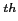
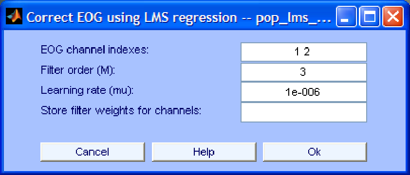

Next: Conventional Recursive Least Squares
Up: EOG removal using regression
Previous: EOG removal using regression
Contents
The graphical interface of the algorithm is shown in Fig. 1. The parameters that can be specified in that window are described below:
- EOG channel indexes. The indexes of the EEG channels to be used as reference (regression) channels. At least one channel has to be specified.
- Filter order (M). The number of taps of the adaptive filter. By increasing the order we might remove more EOG artifacts but we also increase the risk of overcorrection, i.e. removing useful information from the EEG. Also, high filter orders increase the computation time, slow down convergence and might lead to numerical unstability.
- Learning rate. Decreasing this parameter slows down convergence but makes the algorithm more stable and viceversa.
- Store filter weights for channels. In this field we can specify the indexes of the channels for which the values of the filter weights in each iteration should be tracked. If this field is left empty, tracking is not performed. Note that tracking the filter weights considerably increases the computation time and the memory requirements of the algorithm. The results of the tracking are stored in the field
.Hh of the current EEGLAB structure. More specifically, the evolution of the i
filter tap for the EEG channel corresponding to the j
index specified in this field is stored in EEG.Hh(i,j,:).
Figure 1:
Interface window for EOG removal using LMS regression.
|  |
Next: Conventional Recursive Least Squares
Up: EOG removal using regression
Previous: EOG removal using regression
Contents
gomezher
2007-12-10